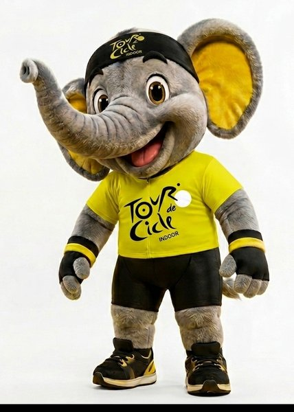

ETAPA 01
Assista o vídeo
para liberar a consulta.
A caixa de busca abre depois que você inicia o vídeo da etapa.

Vídeo iniciado. Você pode liberar a consulta agora.
ETAPA 02

CICLE
Oi, eu sou o Cicle!
Sou o mascote oficial do Tour de Cicle Indoor e vou te ajudar a consultar tudo sobre os 78 atletas da etapa FTP 20'. Pergunte por nome, academia, categoria, peso, FTP ou FTPr. Comece por uma das sugestões abaixo.